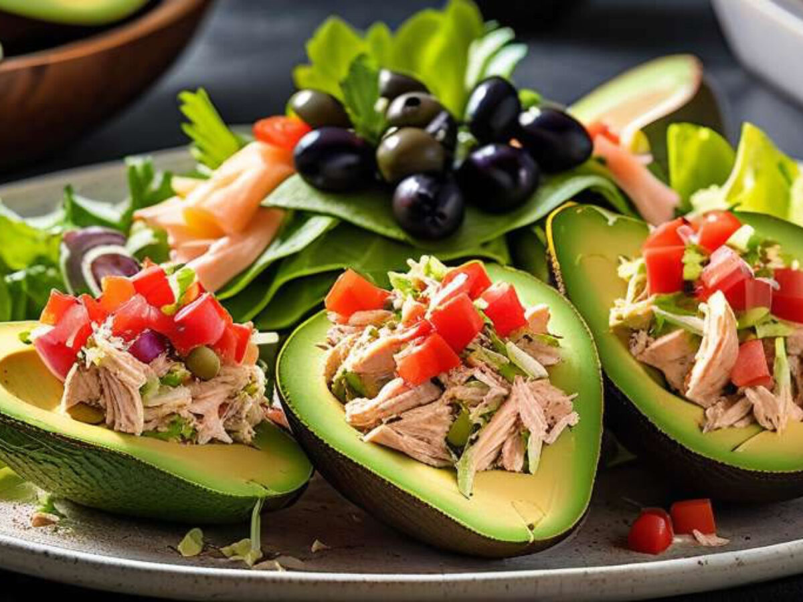

Palta reina is a delicious Chilean dish that consists of chicken salad on a halved avocado. The chicken topping for this simple appetizer is typically made with chicken breasts, mayonnaise, garlic, mustard, onions, fresh herbs, and cayenne pepper. There are many variations on this dish, so numerous other ingredients might be added to the combination, such as lemon juice, bell peppers, olives, or Tabasco sauce.
Meal prep time : 20 minutes
Servings : 4